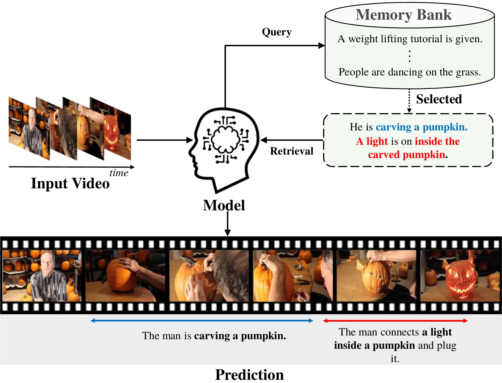
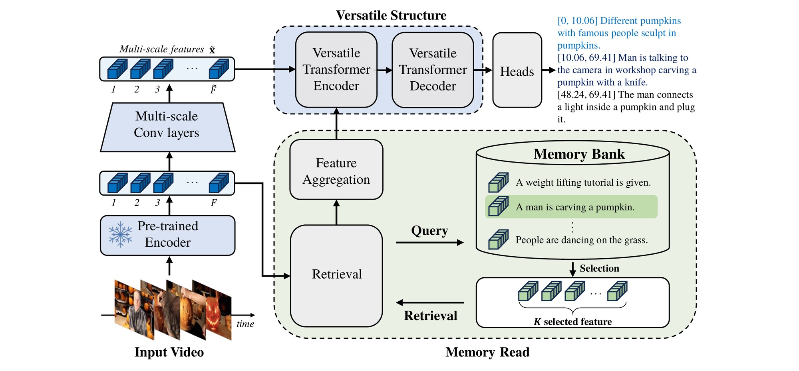
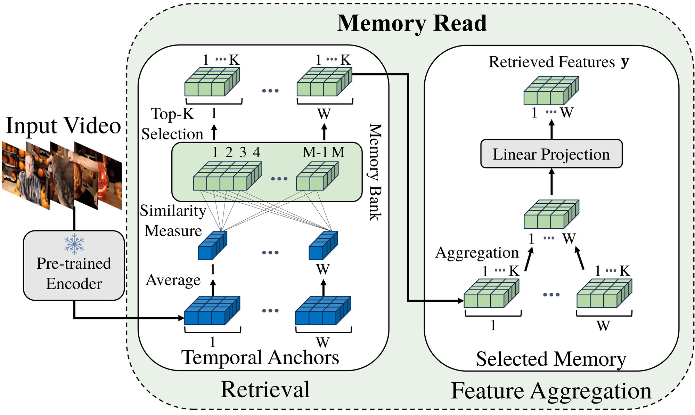
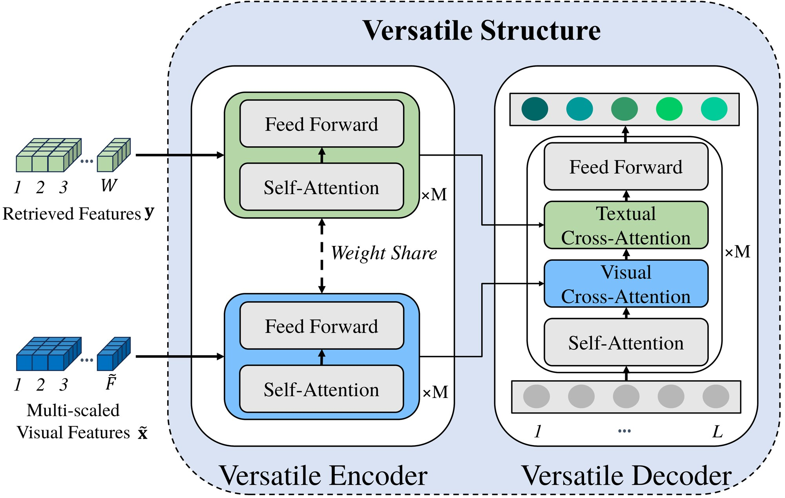

Do You Remember? Dense Video Captioning with Cross-Modal Memory Retrieval
Overview
CM² stores the training captions as an external memory. The input video is split into segment-level temporal anchors, and each anchor retrieves its most similar sentences through video-to-text matching. A versatile encoder processes the visual features and the retrieved text with shared weights, and the decoder reads them through separate visual and textual cross-attention to predict event boundaries and captions.
Without pretraining on extra videos, CM² reaches 33.01 CIDEr on ActivityNet Captions, above Vid2Seq, which is pretrained on 15M videos.

See it in action
Method



Results
Event captioning, ActivityNet Captions
| Method | Backbone | #PT videos | CIDEr | METEOR | BLEU4 | SODA_c |
|---|---|---|---|---|---|---|
| Vid2Seq | CLIP | 15M | 30.10 | 8.50 | – | 5.80 |
| MT | TSN | – | 6.10 | 3.20 | 0.30 | – |
| ECHR | C3D | – | 14.70 | 7.20 | 1.82 | 3.20 |
| UEDVC | C3D | – | – | – | – | 5.5 |
| PDVC† | CLIP | – | 29.97 | 8.06 | 2.21 | 5.92 |
| CM² (ours) | CLIP | – | 33.01 | 8.55 | 2.38 | 6.18 |
Event captioning, YouCook2
| Method | Backbone | #PT videos | CIDEr | METEOR | BLEU4 | SODA_c |
|---|---|---|---|---|---|---|
| Vid2Seq | CLIP | 1M | 47.10 | 9.30 | – | 7.90 |
| MT | TSN | – | 9.30 | 5.00 | 1.15 | – |
| ECHR | C3D | – | – | 3.82 | – | – |
| E2ESG | C3D | – | 25.00 | 3.50 | – | – |
| PDVC† | CLIP | – | 29.69 | 5.56 | 1.40 | 4.92 |
| CM² (ours) | CLIP | – | 31.66 | 6.08 | 1.63 | 5.34 |
Event localization
| Method | PT | ActivityNet Captions | YouCook2 | ||||
|---|---|---|---|---|---|---|---|
| F1 | Recall | Precision | F1 | Recall | Precision | ||
| Vid2Seq | ✓ | 53.29 | 52.70 | 53.90 | 27.84 | 27.90 | 27.80 |
| PDVC† | ✗ | 54.78 | 53.27 | 56.38 | 26.81 | 22.89 | 32.37 |
| CM² (ours) | ✗ | 55.21 | 53.71 | 56.81 | 28.43 | 24.76 | 33.38 |
Bold and underline mark the best and second best, as in the paper. †Reproduced from the official implementation. #PT videos: extra videos used for pretraining. All methods in the localization table use CLIP features.
How much a good memory could add
If retrieval were perfect (querying the memory with the ground-truth captions and placing the results on ground-truth segments), YouCook2 CIDEr would reach 183.95. CM²'s real retrieval is a first step toward that ceiling.